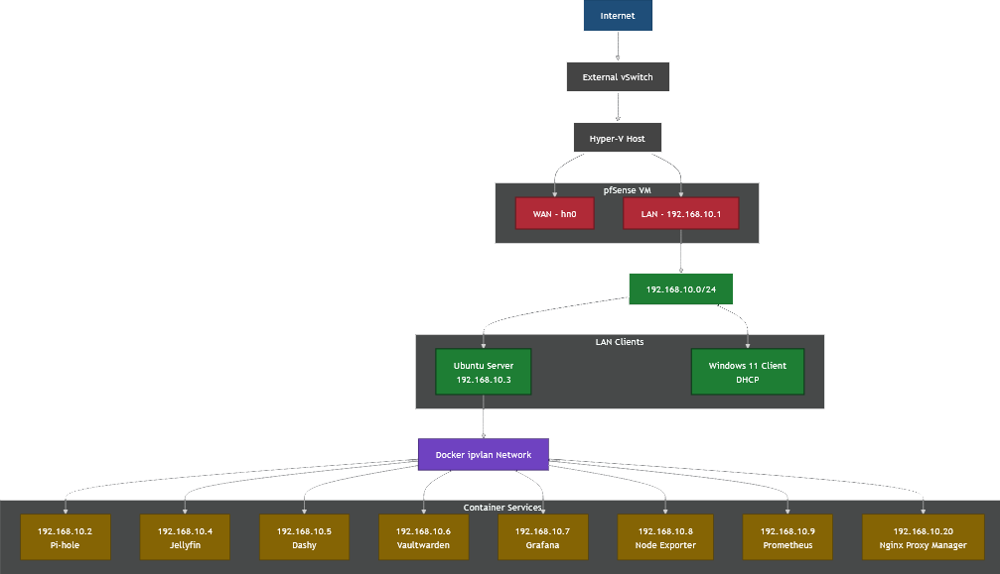

A fully virtualized home network environment built using Microsoft Hyper-V.
Wojtek Network is a fully virtualized home network environment built using Microsoft Hyper-V. The project simulates a realistic, secure, and scalable home or small-office network by combining virtual machines, firewall routing, containerised service and centralised management tools. The environment demonstrates real-world networking concepts including network segmentation, firewalling, DNS filtering, DHCP, container orchestration and service hosting.
Below is a visual overview of our network infrastructure and service layout.

If you would like a full on overview of the infrastructure of the network and why some of the voices were decided and picked then please click on the button above that will take a you to our Github page